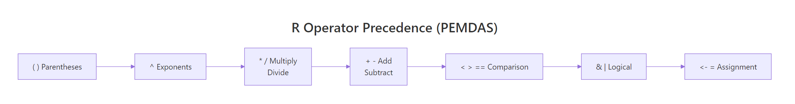
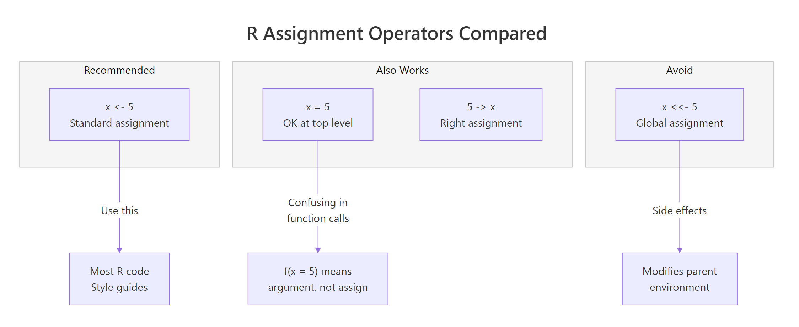
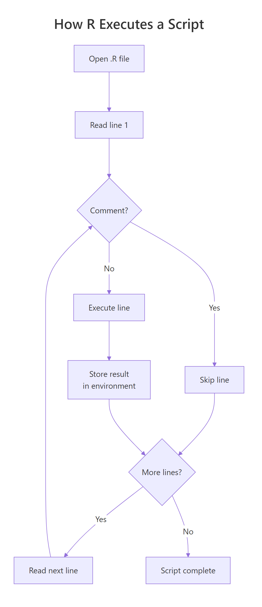

R Syntax 101: Write Your First Working Script in 10 Minutes
R's core syntax has three building blocks: operators for math and comparison, assignment with <- to store values in variables, and comments with # to annotate your code. Master these three and you can read — and write — any R script.
Type 2 + 2 into the R console and press Enter. You just ran R code. This tutorial builds from that moment: first arithmetic, then variables, then comments, then a complete script that ties everything together. Every code block below is interactive — click Run to see the output yourself.
R as a Calculator
R evaluates arithmetic the moment you hit Enter. Every operator you'd expect from a calculator works out of the box.
| Operator | Meaning | Example | Result |
|---|---|---|---|
+ |
Addition | 10 + 3 |
13 |
- |
Subtraction | 10 - 3 |
7 |
* |
Multiplication | 10 * 3 |
30 |
/ |
Division | 10 / 3 |
3.333... |
^ |
Exponentiation | 2 ^ 10 |
1024 |
%% |
Modulo (remainder) | 10 %% 3 |
1 |
%/% |
Integer division | 10 %/% 3 |
3 |
Operator Precedence (PEMDAS)
R follows standard math order: Parentheses, Exponents, Multiplication/Division, Addition/Subtraction. When in doubt, add parentheses.

Figure 1: R evaluates operators in this order — parentheses first, then exponents, then multiplication/division, then addition/subtraction, then comparison, then logical, and finally assignment.
Comparison & Logical Operators
Comparisons return TRUE or FALSE. You'll use these constantly in filtering data and writing conditions.
Use
==for comparison, not=. A single=is assignment. Mixing them up is the most common beginner mistake in R.
Variables & Assignment
A variable stores a value so you can reuse it by name. R's assignment operator <- points the value into the variable — think of it as an arrow saying "put this into that."
Why <- and Not =?
Both work for assignment at the top level. But <- is the R convention, recommended by every style guide, and avoids a real ambiguity inside function calls.

*Figure 2: Use <- for standard assignment. The = operator works at the top level but causes confusion inside function calls. Right assignment -> and global assignment <<- exist but are rarely needed.*
Naming Rules
| Rule | Valid examples | Invalid examples |
|---|---|---|
Letters, numbers, ., _ |
my_var, x2, .temp |
my-var, 2x |
Must start with letter or . |
data1, .cache |
1data, _var |
| Case-sensitive | X and x are different |
— |
| No reserved words | my_if, my_for |
if, for, TRUE, NULL |
Updating Variables
Assigning to an existing name overwrites the old value. R keeps no history — the previous value is gone.
Comments
A comment is any text after # on a line. R ignores it completely. Use comments to explain why your code does something — the code itself already shows what it does.
Section Headers and Multi-Line Comments
R has no block comment syntax like /* */ in other languages. Use multiple # lines. In RStudio, select lines and press Ctrl+Shift+C to toggle commenting.
Built-in Functions
R comes with hundreds of built-in functions. Call a function by name, followed by parentheses containing the arguments.
Your First Complete Script
A script is a plain text file with a .R extension. R reads it top to bottom, executing one line at a time. Comments are skipped. Results are stored in the environment for later lines to use.

Figure 3: R reads your .R file line by line. Lines starting with # are skipped. Each executable line runs in order, and its results are available to all subsequent lines.
Here's a complete script that combines everything from this tutorial — arithmetic, variables, functions, and comments:
Try modifying the
scoresvector orpassing_gradeabove and clicking Run again. Every variable recalculates automatically — that's the power of a script over manual calculator work.
Common Syntax Errors
Every R beginner hits these. Recognizing the error message saves hours of frustration.
| Error Message | Likely Cause | Fix |
|---|---|---|
object 'x' not found |
Typo in variable name, or forgot quotes | Check spelling, add "quotes" for strings |
unexpected '=' in "if(x =" |
Used = instead of == |
Use == for comparison |
could not find function 'Mean' |
Wrong capitalization | R is case-sensitive — use mean |
unexpected end of input |
Missing ) or } |
Count your brackets |
unexpected symbol |
Missing comma or operator | Check commas between arguments |
Practice Exercises
Exercise 1: Calculator
Compute: (15 + 7) * 3 - 10 / 2. Store the result in answer and print it.
Click to reveal solution
Explanation: Parentheses force 15 + 7 = 22 first. Then 22 * 3 = 66 and 10 / 2 = 5 happen at the same precedence level (left to right). Finally 66 - 5 = 61.
Exercise 2: Variable Swap
Swap the values of a and b without hardcoding numbers.
Click to reveal solution
Explanation: Without temp, writing a <- b would lose a's original value. The temporary variable holds it during the swap.
Exercise 3: Temperature Converter
Convert 98.6 degrees Fahrenheit to Celsius using C = (F - 32) * 5/9.
Click to reveal solution
Explanation: Parentheses ensure the subtraction happens before the multiplication. round(celsius, 1) formats to one decimal place.
Exercise 4: String Builder
Build a formatted greeting using paste0() and variables.
Click to reveal solution
Explanation: paste0() concatenates with no separator. R automatically converts year (numeric) to text. Use paste() with sep = " " if you want spaces added automatically.
Exercise 5: Mini Data Analysis
Given daily temperatures, compute the mean, the range (max - min), and count how many days exceeded 30 degrees.
Click to reveal solution
Explanation: sum(temps > 30) counts TRUE values — R treats each TRUE as 1 and FALSE as 0. This is the idiomatic R way to count elements matching a condition.
Summary
| Concept | Syntax | Example | |
|---|---|---|---|
| Arithmetic | + - * / ^ %% %/% |
2 ^ 10 → 1024 |
|
| Comparison | == != > < >= <= |
5 == 5 → TRUE |
|
| Logical | `& | !` | TRUE & FALSE → FALSE |
| Assignment | <- |
x <- 42 |
|
| Comments | # |
# This is ignored |
|
| Strings | "text" or 'text' |
name <- "Alice" |
|
| Function call | fn(args) |
mean(c(1, 2, 3)) |
|
| Help | ?fn |
?mean |
FAQ
Why does R use <- instead of = for assignment?
It's a convention inherited from the S language (R's ancestor, created in the 1970s at Bell Labs). The <- makes the direction of assignment visually explicit: "put this value into that name." Every major R style guide — tidyverse, Google, Bioconductor — recommends <-. The = operator works at the top level but is ambiguous inside function calls, where = means "set this argument."
What's the difference between = and ==?
= is assignment — it stores a value: x = 5. == is comparison — it tests equality: x == 5 returns TRUE or FALSE. Using = when you mean == is one of the most common R bugs. The code runs without error but does something completely different from what you intended.
Is R case-sensitive?
Yes, everywhere. mean() works; Mean() throws "could not find function." myVar and myvar are two separate variables. This applies to function names, variable names, package names, and argument names.
How do I write multi-line comments?
R has no block comment syntax. Use multiple lines starting with #. In RStudio, select lines and press Ctrl+Shift+C (Windows) or Cmd+Shift+C (Mac) to toggle comments on all selected lines at once.
Can I use dots and underscores in variable names?
Yes. Both my.variable and my_variable are valid R names. The tidyverse style guide recommends snake_case (underscores). Some older R code uses dots, but dots have special meaning in S3 method dispatch (print.data.frame is the print method for data frames), so underscores are safer for your own variables.
What's Next?
- R Data Types — understand numeric, character, logical, and more
- R Vectors — the fundamental data structure everything builds on
- R Control Flow — if/else, for loops, and while loops